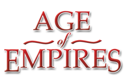
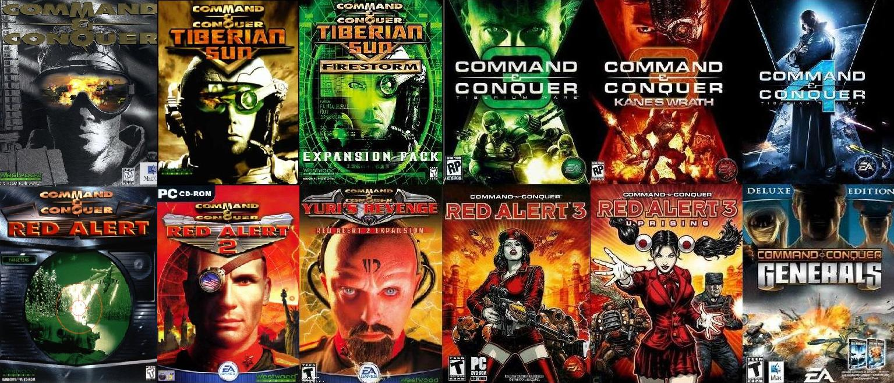
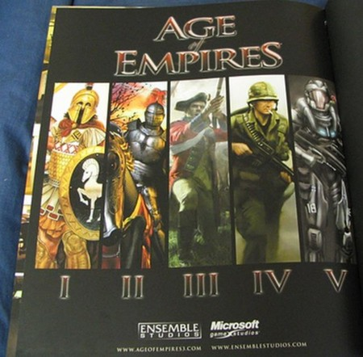
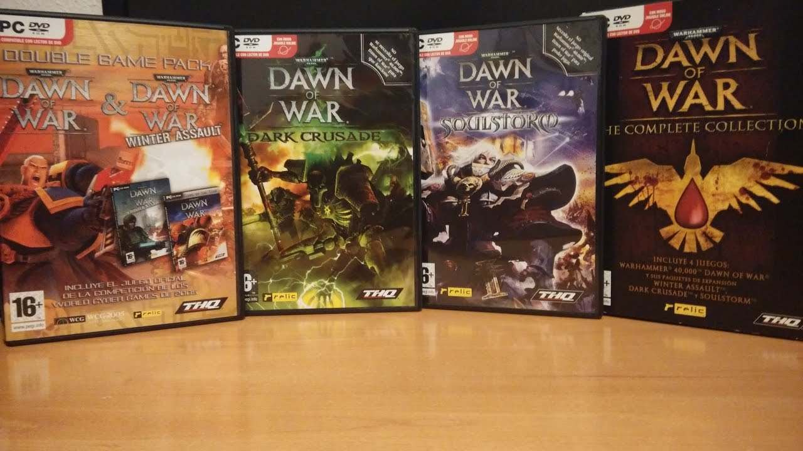

Quien Soy
Introduccion
Soy angel y en esta seccion os pondre cosas random por lo que puede empezar algo con un tema y en la siguiente seccion el contenido ser completamente diferente.
Esta pagina se muestra asi por la razon de que se visualice algo de conocimiento de Lenguaje de Marcas y para conocer un poco algo sobre el credor del blog.
Si se requiere ir a alguna seccion en particular tienes un acceso directo a esa seccion a la derecha de este blog.
Genero de juego favorito
RTS (Real Time Strategy)
Un estilo de juego que normalmente lo vas a relacionar con ,
son un genero pensado para jugar de forma dinamica y "rapida"(segun el juego las partidas pueden duras entre 30 minutos hasta 3 horas).
Al ser uno de los subgéneros de los juegos de estrategia más dinámicos que hay, por regla general están más trabajados en el apartado gráfico, ya que al tener terrenos de juego más pequeños que otros subgéneros, se pueden representar más texturas sin alterar tanto el rendimiento.
Algunos ejemplos de este genero son:
Saga Command & Conquer
Saga sin completas Age Of Empires
Saga Warhammer Dawn Of War 1 y 2
Warhammer 4000
Informacion variada
En la siniestra oscuridad del futuro lejano sólo hay guerra.
Games Workshop es la compañia que empezo todo desde sus principios de un juego de mesa, a seguidamente crear novelas sobre el mundo futuristico de warhammer 40000 y finalmente a crear diferentes tipos de juegos respecto al tema.
Si buscas saber mas sobre el mundo futurista de warhammer 40000 puedes ir a WIKIPEDIA_WARHAMMER hecha por su comunidad de fans en la que tienes horas de lentura respecto a el tema
Si en cambio buscas las novelas tienes bastantes libros para escoger aqui.
Yo aconsejo los libros de LA HEREJIA DE HORUS aqui teneis una imagen de la cantidad de libros que puedes leer solo de esa seccion.
Aqui tienes una lista con unos pocos juegos del warhammer 4000:
| NOMBRE | AÑO DE SALIDA | GENERO |
|---|---|---|
| DAWN OF WAR | 20 de septiembre de 2004 | RTS |
| Battlefleet Gothic: Armada | 21 de abril de 2016 | RTS |
| Warhammer 40,000: Space Marine | 5 de septiembre de 2011 | TPS(third person shooter) |
| Space Hulk: Deathwing | 14 de diciembre de 2016 | FPS(First-person shooter) |
| Warhammer 40,000: Fire Warrior | Octubre de 2003 | FPS(First-person shooter) |
Por si te has quedado con ganas de mas aqui tienes un video explicativo de uno de los juegos con algo de humor por ciertos problemas pondre solo el link en vez de mostrar el video aqui. video_warhammer:Space-Marine